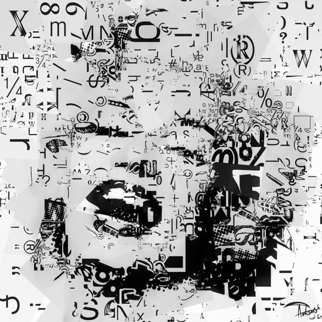
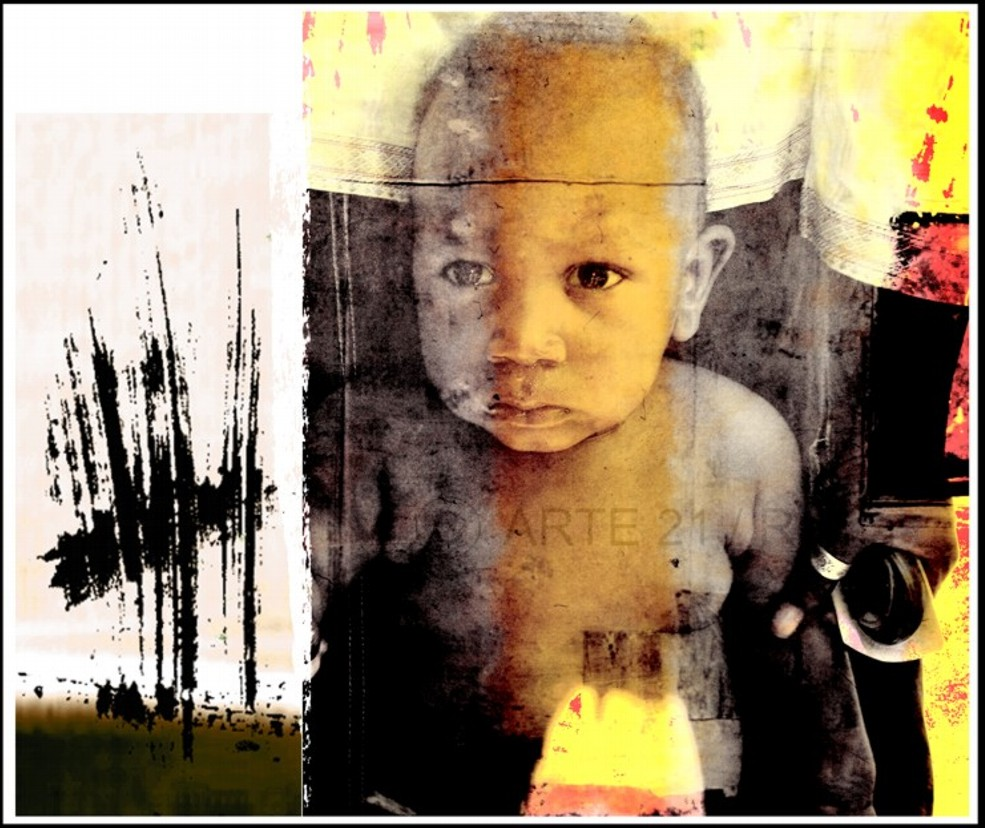
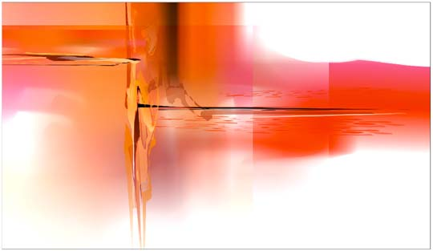
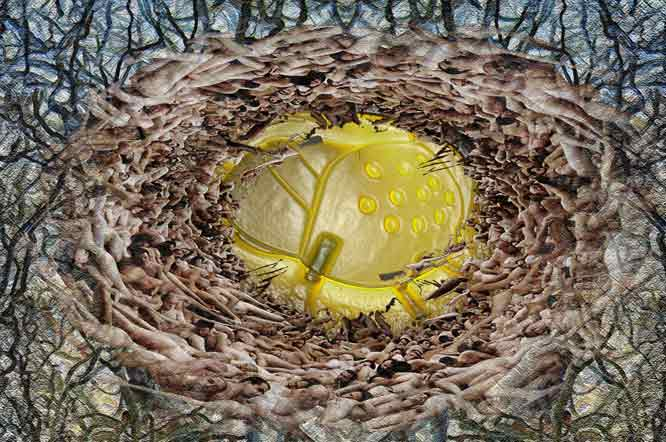

IMAGES OF THE DAY 85
10/21/2023 - 10/31/2023
10/21/2023
Mixed Technology
Fractals, Photography and Digital Processing
Bipolar Terminal
by Benedikt Amrhein
Click image to access artist's full exhibit


10/22/2023
Mixed Technology
Art by Antonio
Icon 1
by Antonio
Click image to access artist's full exhibit

10/23/2023
Mixed Technology
Digital Art Portraits
People2
by Andrea Bonaventura
Click image to access artist's full exhibit
10/24/2023
Mixed Technology
Illustration Art
IF - MAIL BX
by Hudson Calasans
Click image to access artist's full exhibit

10/25/2023
Mixed Technology
Digital and Korean Aesrhetics
Shower
by Park Chunshin
Click image to access artist's full exhibit

10/26/2023
Mixed Technology
Paintographs
The Pragmatic S
by Carol Cooper
Click image to access artist's full exhibit


10/27/2023
Mixed Technology
Vector Art
Mean Reds
by Wil Dawson
Click image to access artist's full exhibit
10/28/2023
Mixed Technology
Imaginary Gardens
Portolano
by Carmen Dell'Aversano
Click image to access artist's full exhibit

10/29/2023
Mixed Technology
CyberAlchemy
Birth of Spring
by Sara Deutsch
Click image to access artist's full exhibit

10/30/2023
Mixed Technology
Mental Landscape
Venus Comb
by Michael Frank
Click image to access artist's full exhibit


10/31/2023
Mixed Technology
States of Mind
Turbine
by Giuseppe Genna
Click image to access artist's full exhibit
BACK TO IMAGES OF THE DAY 84
NEXT